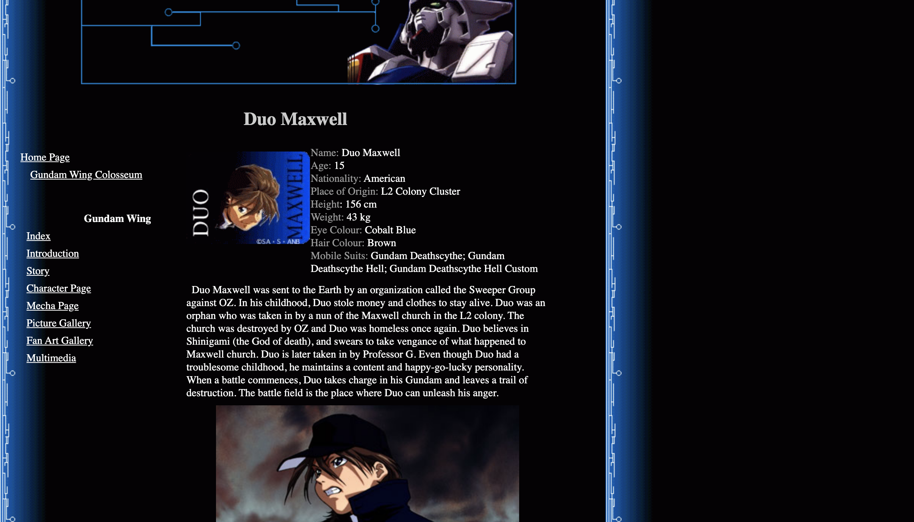
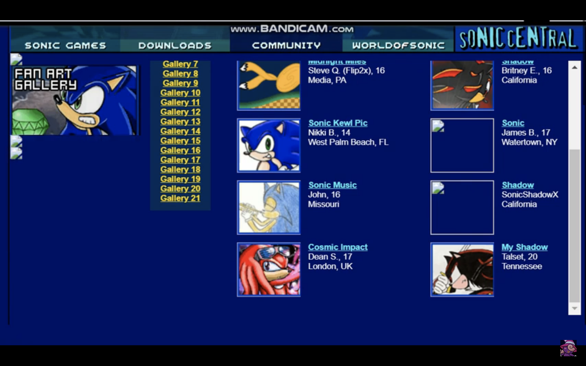
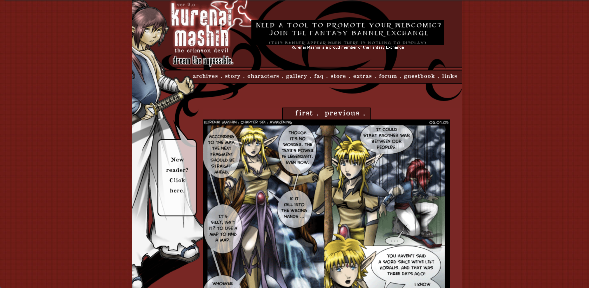
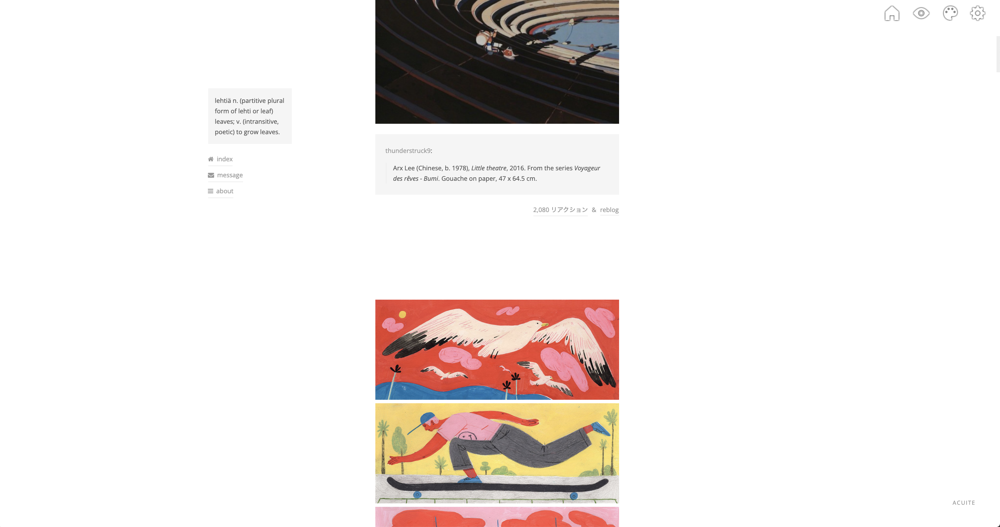
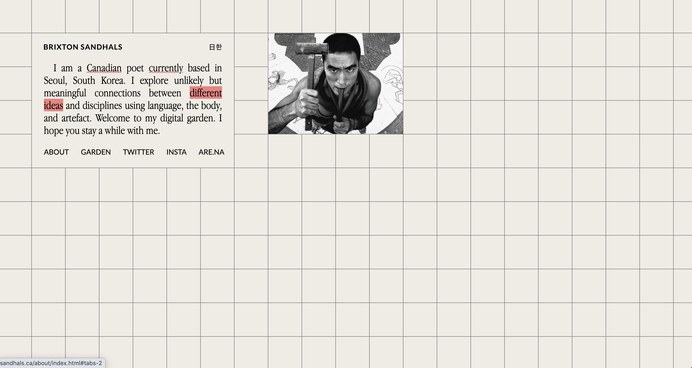

19
94
I was born in Vancouver, BC on August 23rd 1994, thirteen days after Glenn Davis published his landmark "Cool Site of the Day." Of course at this time, I would not have the linguistic skills to appreciate the site's contents nor the manual dexterity to handle a mouse or keyboard. I would be busy with much more pressing matters such as adjusting to life converting oxygen into energy by myself, being fed through the mouth, and all the other things newborns must concern themselves with when starting life outside the womb. And so browsing Davis' archive would've been a hopeless task, but reflecting on my history with computers, it feels somehow appropriate that me and Davis' site would find ourselves flung into the world at around the same cosmic moment.
95
96
97
98
99
Enter Kindergarten
20
00

My first memories of freely exploring the Internet date to around the year 2000. I never saw the episode myself, but my younger brother relayed to me one Saturday morning that while I was sleeping, he'd discovered an anime called Gundam Wing on our dad's satellite TV. Taking to Google to investigate, I quickly became obsessed with the characters, the robots, and the music. What started as hour long scrolls through Google Images, eventually led me to fansites hosted on Geocities and Angelfire where I could find factoids about my favourite characters as well as screenshots and official art from the show.
My first memories of freely exploring the Internet date to around the year 2000. I never saw the episode myself, but my younger brother relayed to me one Saturday morning that while I was sleeping, he'd discovered an anime called Gundam Wing on our dad's satellite TV. Taking to Google to investigate, I quickly became obsessed with the characters, the robots, and the music. What started as hour long scrolls through Google Images, eventually led me to fansites hosted on Geocities and Angelfire where I could find factoids about my favourite characters as well as screenshots and official art from the show.
01
02

After the release of Sonic Adventure 2 Battle onto the Gamecube, my brother and began spending an inordinate amount of our time on the computer using the official Sonic Central website. There we could explore profiles of the characters, see answers to frequently asked questions, and perhaps most excitingly, view fanart which other kids had submitted to the site. We suddenly became obsessed with the idea of getting a scanner. The notion that we could somehow put what we had drawn on paper onto our computer screens, and better yet, onto the internet, was tantalizing. But the fantasy remained just that for the time being. This didn't stop us from drawing fanart, creating original Sonic characters, and dreaming about getting our pictures onto the site though.
After the release of Sonic Adventure 2 Battle onto the Gamecube, my brother and began spending an inordinate amount of our time on the computer using the official Sonic Central website. There we could explore profiles of the characters, see answers to frequently asked questions, and perhaps most excitingly, view fanart which other kids had submitted to the site. We suddenly became obsessed with the idea of getting a scanner. The notion that we could somehow put what we had drawn on paper onto our computer screens, and better yet, onto the internet, was tantalizing. But the fantasy remained just that for the time being. This didn't stop us from drawing fanart, creating original Sonic characters, and dreaming about getting our pictures onto the site though.
03

Around this age, a friend of mine introduced me to Homestarrunner. Before then, flash animations and games mostly existed in my mind as the crudely made anime fan content I had seen on sites like Newgrounds. Homestarrunner was perhaps the first example of a whole universe of original content and characters that existed solely online.
04

deviantART was the first social media site that I joined and would later become the meeting-ground for the first Internet friends I ever made. I would spend hours upon hours searching random terms, scrolling through and reading artists' "journals" (dA's version of a blog), and later would
05

It was around this age that I started becoming actively interested in seeing more of the original content of artists online with a more serious tone. This curiosity eventually lead me toward the world of webcomics where I would encounter websites, some hand-made, others using platforms like SmackJeeves, which contained not only pages and pages of story, but also wiki like articles detailing the world, characters, magic, and other elements of the story. I would print off the images and text from some of these pages, keeping them in folders for inspiration or to copy.
It was around this age that I started becoming actively interested in seeing more of the original content of artists online with a more serious tone. This curiosity eventually lead me toward the world of webcomics where I would encounter websites, some hand-made, others using platforms like SmackJeeves, which contained not only pages and pages of story, but also wiki like articles detailing the world, characters, magic, and other elements of the story. I would print off the images and text from some of these pages, keeping them in folders for inspiration or to copy.
06

Although games and RPGs were a big part of my life growing up, it was rarely as a player. Early on I had decided it was far more fun for me to spectate, handle the game manual, and occasionally do some backseat puzzle solving and let my brother handle the fighting and exploration. Feeling inspired, my brother and I would often doodle imaginary screenshots of games we had invented, desigining characters, maps, and interfaces, and so when I had discovered that some of these fantasies could be realized with the help of computer software, I naturally became very interested. Many sleepovers at my home would be spent with my friends up late playing on RPGMakerVX, and having my brother come to the computer every few hours to try out what we had made.
07
Enter High School
08

tegaki-e, twitter
09
10

Here marks what is a familiar stage in the Internet life cycle for many other people my age. I first signed up for Tumblr around when I had entered high school and quickly took to it, becoming keen on developping my curatorial muscles, and moreover cognizant for the first time perhaps of the notion of a digital, personal aesthetic.
Here marks what is a familiar stage in the Internet life cycle for many other people my age. I first signed up for Tumblr around when I had entered high school and quickly took to it, becoming keen on developping my curatorial muscles, and moreover cognizant for the first time perhaps of the notion of a digital, personal aesthetic.
11
12
Graduate High School
Enter University
Enter University
13
14
15
16
Graduate University
Move to Japan
Move to Japan
17
18
are.na
19

After many years of thinking about it, and dreaming about it, my many pleasant encounters with so many people in such a short amount of time carving out space for themselves online and on their own terms made the purchase an easy one. With my protoype for my site finished, I purchased my first domain in 2019.
After many years of thinking about it, and dreaming about it, my many pleasant encounters with so many people in such a short amount of time carving out space for themselves online and on their own terms made the purchase an easy one. With my protoype for my site finished, I purchased my first domain in 2019.
20
21
Move to Korea
22